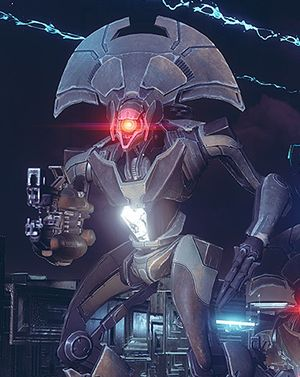

The Vex are a race of transtemporal, cybernetic war-machines—described as a time-spanning thought-mesh by some—who are hostile to the Guardians. They have been encountered on several planets, moons and other celestial bodies
To see the Curse of Osiris DLC, click here